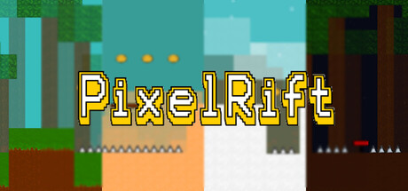

PixelRift: Building My Own Indie Game from Scratch
How a small idea turned into a full 2D pixel-art platformer, made in Python and Pygame and on its way to Steam.

PixelRift is an indie 2D pixel-art platformer I’ve been making. The idea is simple. It starts out feeling like the classic platformers everyone knows, and then it slowly throws harder mechanics, places and obstacles at you.
It began as a small experiment to see if I could make a game at all. It kept growing. By now I’ve had to deal with coding the gameplay, building levels, drawing the art, setting up player accounts, adding accessibility options, testing, and figuring out how to publish on Steam.
Somewhere along the way I realised that making the game fun was only half the work. The other half was everything around it, the stuff you need before a folder full of code and sprites becomes something people can actually download and play.
The Idea
At its heart PixelRift is about exploring, moving well and getting through levels that keep getting harder.
The first levels are pretty basic platforming. After that, new environments, enemies, hazards and mechanics start showing up.
I really wanted the progression to feel like it means something. I didn’t want later levels to just give enemies more health or make the jumps longer. So instead they mix mechanics together in new ways, and you have to use what you’ve already learned differently.
That made me think a lot about the order I introduce things in, how a player picks each one up, and how I can combine them later to make tougher challenges.
Making the Levels
The game is split into a run of environments, and each one is harder than the last.
The early ones, the Forest, Desert and Polar regions, teach you the basic movement and platforming.
After those come the Swamp, Volcano, Ocean and Sky, and then the really tough areas: the Crystal Caverns, Clockwork Factory and Shadow Stronghold.
I didn’t want any of them to be the same level with new colours. Each one should actually play differently.
Levels mix up hazards, enemies, moving platforms, gravity-changing mechanics, bounce pads and other obstacles. I also used parallax backgrounds, lighting and little animations in the scenery so every region has its own look.
The tricky part is keeping each new place fresh while the controls stay the same, so the player never feels lost.
Gameplay and Systems
I quickly found out that a game needs a lot more than a character who can run and jump.
Here’s what PixelRift needed, and most of these depend on each other:
- Player movement, physics and collision detection
- Enemy behaviour and boss encounters
- Level progression and difficulty
- Environmental hazards
- Gravity mechanics and bounce pads
- Collectibles, coins and gems
- Player settings and accessibility options
- Audio and music
- Animation and visual effects
- Death effects and player feedback
- Account-related functionality
- Save and progression systems
- Game distribution and update management
The thing that surprised me most was how fast small features get tangled up with each other.
Say I add a new movement mechanic. It doesn’t just change the player code. It can mess with the shape of levels, where enemies go, animation timing, collisions, accessibility, testing and how hard everything is.
So I had to get used to thinking about how the whole game fits together, not just one piece at a time.
Why Python and Pygame
I’m making PixelRift in Python and Pygame.
Pygame is a lot more bare-bones than the big commercial engines. Loads of things an engine would normally hand you, I had to design and code myself.
That meant writing my own game loop, plus handling rendering, sprites, collisions, input, animation states, level logic and the rest of the gameplay code.
Honestly, that ended up being a good thing.
Since I couldn’t lean on an engine to do it all for me, I had to properly understand how the parts of a 2D game work together under the hood.
It’s made the project a mix of real programming and creative design, which is what I enjoy most.
Enemies and Bosses
I built each enemy around the level it lives in. I didn’t want them to be generic obstacles you could swap anywhere.
Each region has its own enemy types, movement patterns and attacks. Some enemies just come at you. Others are there to mess with the platforming, or to make you change the way you move through the level.
Bosses were harder to get right.
A boss should be tough, but it shouldn’t feel random or unfair. The attacks have to be clear enough that you can spot the pattern, react to it and get a bit better every time you try.
To pull that off, the animations, attack timing, movement, the way the boss interacts with the level and the visual feedback all have to line up.
That boss work kept bringing me back to one rule I tried to stick to the whole time:
The game should be hard because you’re still learning the mechanics, and never because it confused you.
Keeping the Art Consistent
Pixel art looks easy when you see it from far away.
Keeping it all consistent across a whole game is a lot harder than I expected.
Coins, gems, enemies, backgrounds, menus and effects all have to look like they came from the same game.
Even the in-game coin made me stop and think. Could you read it easily? What should the symbol on it be? Would it work for players with accessibility needs? And could it end up looking too much like real money by accident?
So I kept going round the same loop:
- Design
- Test in-game
- Evaluate
- Refine
A sprite could look great on its own and then look wrong once I dropped it into a real level.
So I got into the habit of always testing art inside the game before calling it done.
Accessibility and How It Feels to Play
I’ve also spent a lot of time thinking about how different people will experience the game.
You can’t just tack accessibility on at the end as one switch in the settings.
I had to separate the settings that are real accessibility features from the ones that are just gameplay or visual preferences.
And how the game feels isn’t only about the gameplay.
The menus, signing up for an account, error messages, logging in, visual feedback and the settings screens all make a difference to whether the game feels finished.
I used to mostly ask myself:
“Does the game work?”
Now I ask:
“Does the player understand what is happening?”
They sound similar, but the answers can be really different.
Accounts and the Backend
At some point PixelRift stopped being only a game that runs on your own computer.
Adding player accounts meant I had to think about backend stuff like logging in and verifying email addresses. I tried out Firebase for authentication, and ran into the problems of getting verification emails to arrive reliably and sending my own custom emails.
This was a whole different kind of problem from anything else in the game.
You’d think a platformer is all graphics and physics. Once you add accounts and online features, though, you suddenly have to care about authentication, stopping abuse, privacy and keeping the service running, and those become part of how the whole thing is built.
It showed me how fast a game can go from one program on your computer to something that depends on several different technologies and services.
Getting Ready for Steam
Some of the most useful stuff I’ve learned is what happens after you finish a build and before you can actually ship it.
I’m getting PixelRift ready to release on Steam, and that came with its own set of steps:
- Game build
- Depot upload
- SteamPipe build
- Branch configuration
- Internal testing
- Store configuration
- Review
- Release
I had to learn about build branches, depots, internal testing, store art, library capsules, submitting a demo and what Steam requires before release.
There was also the boring (but important) side of releasing anything, like writing Terms of Service and a Privacy Policy, following the rules for online content and handling player data properly.
Making the game was one big job. Getting it out to players turned out to be a separate problem I had to solve on top of that.
Trying, Failing and Fixing
The biggest habit PixelRift taught me is to keep iterating.
Hardly anything works perfectly the first time.
A mechanic can work fine and still feel clunky to play. A sprite can look nice by itself and then be hard to see on a certain background. A menu can technically do its job and still confuse people.
So most of my time goes into this loop:
- Build
- Test
- Find problems
- Improve
- Test again
Sometimes that just means fixing a bug. Other times I end up rethinking a decision I made much earlier.
Working out when to keep tweaking an idea and when to throw it out and start over is something I’m still getting better at.
What I Learned
PixelRift ended up teaching me way more than just programming.
I had to switch between a lot of different jobs, often in the same week:
- Software Engineering: writing gameplay code where lots of parts depend on each other, and keeping it working.
- Game Design: balancing the mechanics and difficulty, and making sure the player gets clear feedback.
- Product Design: thinking about everything a player goes through from start to finish, not just one feature at a time.
- Visual Design: keeping one pixel-art style across every environment and the menus.
- Backend Engineering: hooking up authentication and getting the online features working.
- DevOps and Distribution: moving builds through testing and up to Steam.
- Testing and Iteration: finding what’s wrong and fixing it, over and over, in the mechanics, the art and the menus.
If I had to pick one lesson, it’s that making a game is mostly about getting lots of pieces to fit.
The code, art, music, backend and the way the game feels can each be fine on their own and still fall apart once you put them together.
Getting all of it to work together is the hard part.
Project Snapshot
- Project
- PixelRift
- Type
- Independent 2D Pixel Platformer
- Platform
- Windows
- Technology
- Python, Pygame-CE
- Distribution
- Steam
- Steam App ID
- 4846670
- Status
- In Development
- Target Release
- December 2026
Follow PixelRift
If you want to see how it’s going, I post dev updates, gameplay previews and news here as I get closer to release.
Closing Thoughts
When I started, all I wanted was to make a platformer.
Since then I’ve ended up going through nearly every step of taking something from an idea to a real release.
I’ve built levels, coded mechanics, made enemies, redrawn a lot of art, thought about accessibility, fought with authentication and got builds ready for Steam.
The main thing I’ve learned is that finishing something this big takes more than getting the code to run. You have to keep testing, keep changing things and keep deciding how dozens of separate parts should fit together.
There’s still stuff to build, balance and fix before it comes out.
I think that’s exactly why it’s the project I’ve learned the most from.
I’m building it from the ground up, from the first line of code all the way to the Steam page.